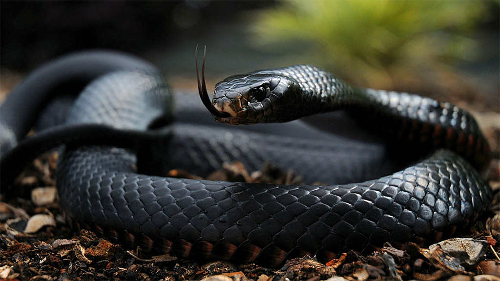
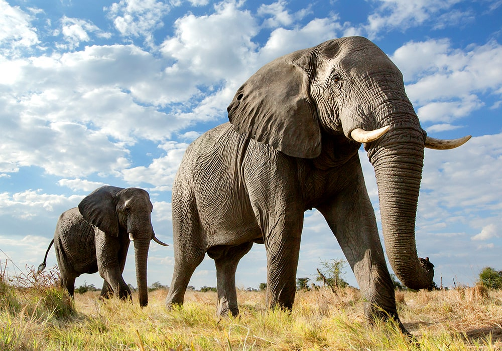

- Lions can get their water from plants
- Lions are the only cats who roar together
- A lion’s roar can be heard up to eight kilometres away
- Female lions are the main hunters. While they’re out looking for food, the males guard the pride’s territory and their young
- Lions eat about 18 pounds of meat per day. That would be like a human eating more than 70 hamburgers
- Only about 1 in 8 male lions survive to adulthood. A majority of lions die shortly after being kicked out of their pride around the age of 2

- A giraffe’s spots are much like human fingerprints. No two individual giraffes have exactly the same pattern
- Giraffes only need 5 to 30 minutes of sleep in a 24-hour period! They often achieve that in quick naps that may last only a minute or two at a time
- Giraffes only need to drink once every few days. Most of their water comes from all the plants they eat
- A giraffe's neck is too short to reach the ground. As a result, it has to awkwardly spread its front legs or kneel to reach the ground for a drink of water
- These incredible creatures are some of the biggest animals in world! The largest of the five species is the white rhino, which can grow to 1.8m tall and and weigh a massive 2,500kg
- Sadly, it’s estimated that there are only around 29,000 rhinos left in the wild, compared to 500,000 at the beginning of the 20th century. The main threat to these beautiful animals is illegal hunting
- Black and white rhinos are both, in fact, grey
- What are rhino horns made of? The same stuff as our fingernails

- Black Mamba is the world's fastest snake
- Black Mambas are more agressive than other venomous snakes
- Black Mambas have black mouths.While their overall color is usually dark olive, olive green, light to dark gray or grayish brown, when they open their mouths it appears black inside
- It is both arboreal and terrestrial
- Unlike most other snakes that bite in the lower extremities when encountered in the standing position, black mamba bites often affect the upper parts of the human body
- Gorillas are very social animals, who live together in groups
- Gorillas can weigh over 200kg and stand as tall as an average human
- Gorillas are very clever, and have been recorded making and using tools
- We share around 98% of our DNA with gorillas
- They can eat all day long
- Our planet is home to three different species of zebra, the plains zebra, Grevy’s zebra and mountain zebra, all three species are native to Africa
- They can run up to 65km/h
- Zebras are part of the horse and donkey family
- Zebras can sleep while standing up
- Their stripes help camouflage them
- Zebra stripes are unique like giraffe's pattern and human's fingerprint
- Zebras are social animals and live together in large groups, called herds. As they migrate to new feeding grounds, ‘super herds’ may form consisting of thousands of individuals. They may team up with other grazers on their travels, too, such as antelope and wildebeest

- It is said that the wing beat of a great hornbill can be heard more than a half mile away
- The greater hornbill is able to consume as many as 150 figs during one meal
- Hornbills are famous for their nesting ritual. Once courtship and mating are over, the female finds a tree hollow and seals herself in with dung and pellets of mud.Some male hornbills are so exhausted after the nesting process that a few may die
- The first two neck vertebrae of the hornbills have been fused to support their large bill. Though its bill looks quite heavy, is actually very light; it is made up of thin-walled hollow cells
- Hippos are the third largest mammals on Earth
- Hippos are strong swimmers
- The gestation period of a hippo is 243 days (eight months)
- Hippos can identify friends from enemies
- Hippos are most active at night

- They're the world's largest land animal
- Their tusks are actually teeth
- They communicate through vibrations
- The elephant's temporal lobe (the area of the brain associated with memory) is larger and denser than that of people - hence the saying 'elephants never forget'
- Elephants have around 150,000 muscle units in their trunk. Their trunks are perhaps the most sensitive organ found in any mammal - Asian elephants have been seen to pick up a peanut, shell it, blow the shell out and eat the nut. Elephants use their trunks to suck up water to drink – it can contain up to 8 litres of water. They also use their trunks as a snorkel when swimming